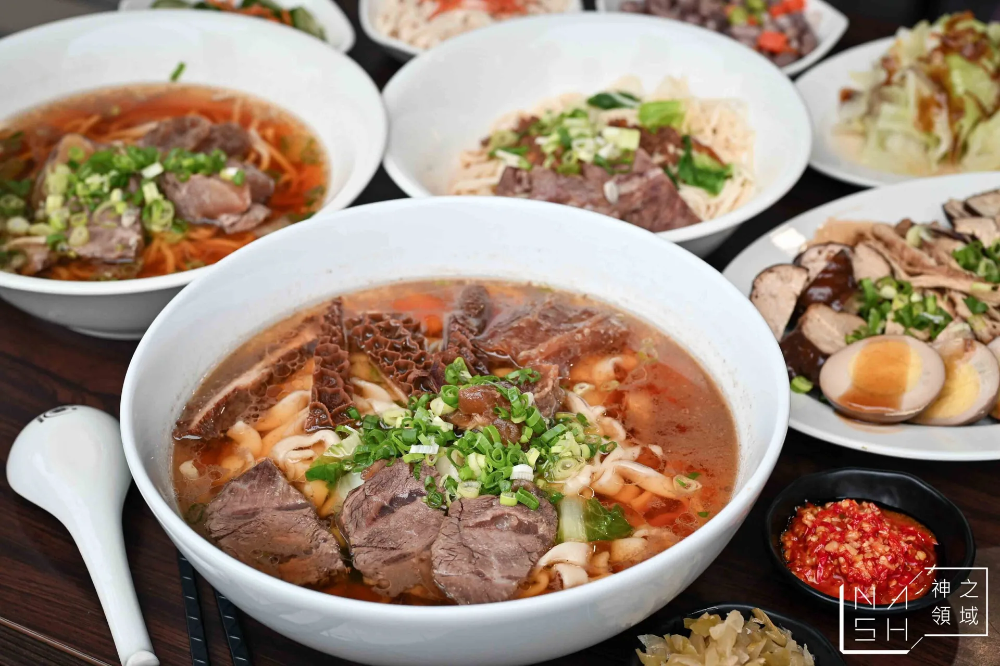

Nash｜肥仔許 牛肉麵/滷味：信義莊敬路中藥燉感牛肉麵

一句話摘要
《肥仔許 牛肉麵/滷味》位在信義區莊敬路、吳興街商圈附近，主打帶中藥燉感的牛肉湯頭與份量實在的牛肉麵，是台北101／世貿站周邊可收藏的牛肉麵口袋名單。
為什麼保存
這篇是實用美食資訊，提供店名、地址、交通、電話、營業時間、菜單方向與推薦品項。若之後在信義區、莊敬路、北醫／吳興街或台北101附近想找牛肉麵，可以快速查到。
店家資訊
- 店名：肥仔許 牛肉麵/滷味
- 地址：臺北市信義區莊敬路334號
- 捷運：台北101/世貿站，步行約 8–10 分鐘
- 電話：0983 109 989
- 營業時間：11:30–15:00、17:00–21:00
- 類型：牛肉麵、滷味、吳興街／莊敬路美食
原文重點整理
- 店面在莊敬路上，黑色招牌搭配白字與廚師插畫，辨識度高。
- 用餐環境乾淨明亮，座位數不算特別多；平日中午也可能客滿，建議提早到。
- 麵類可選刀削麵（寬麵）或細麵。
- 菜單主軸是牛肉麵，也有半筋半肉、三寶、四喜、乾拌麵與滷味。
- 原文認為湯頭不是單純紅燒或清燉，而是偏中藥燉感：比紅燒少油、比清燉更有厚度。
口袋菜單
| 品項 | 原文價格 | 備註 |
|---|---:|---|
| 滿漢牛四喜麵 | $300 | 含牛腱心、牛腩、牛筋、牛肚，原文認為份量與 CP 值出色。 |
| 牛肉麵 | $220 | 以信義區地段來看價格不算低，但原文覺得對得起實力。 |
| 三寶麵 | 未列 | 牛腱心、牛筋、牛肚。 |
| 花干 | 未列 | 原文特別提到「必點」。 |
| 酸菜 | — | 帶微辣，加入湯頭可提升中藥香氣。 |
| 黃瓜、花生小菜 | 未列 | 清爽解膩，適合搭配濃郁牛肉麵。 |
適合情境
- 在台北101／世貿站、莊敬路、吳興街商圈附近找午餐或晚餐。
- 想吃湯頭有中藥燉感、但不油膩的牛肉麵。
- 想一次吃多種牛肉部位，可考慮四喜麵。
- 想建立「信義區牛肉麵」或「台北牛肉麵」比較清單。
實用提醒
原文提到店內座位有限、尖峰時段可能需要候位。營業時間、菜單價格與公休日可能變動，前往前建議再查 Google Maps 或致電確認。